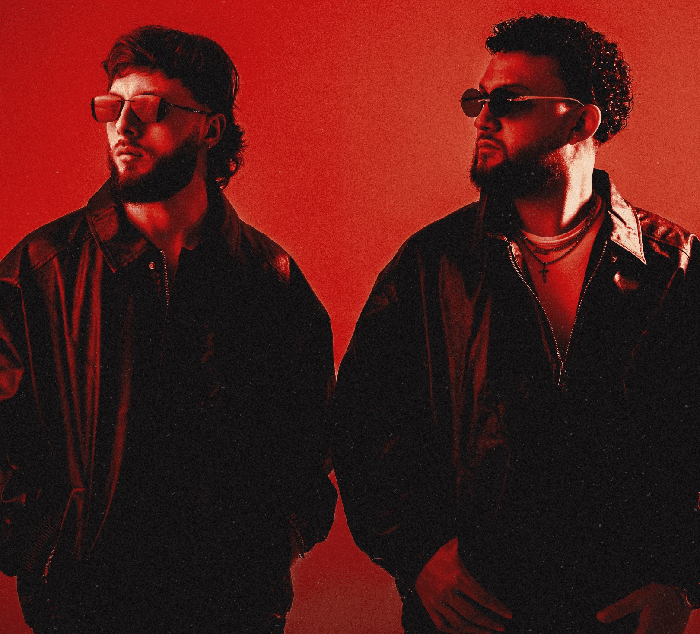
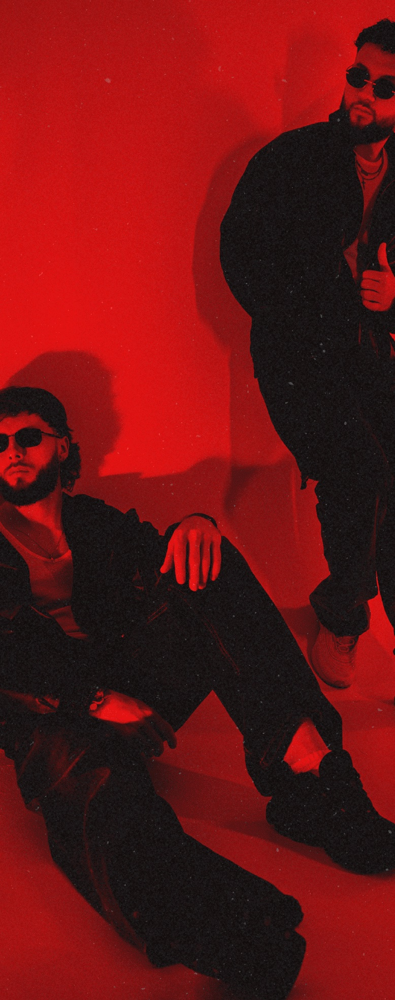
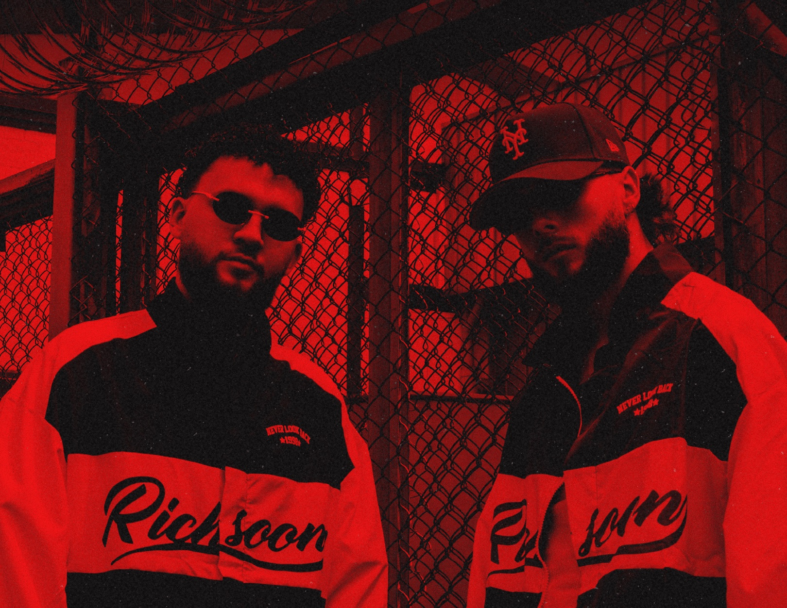
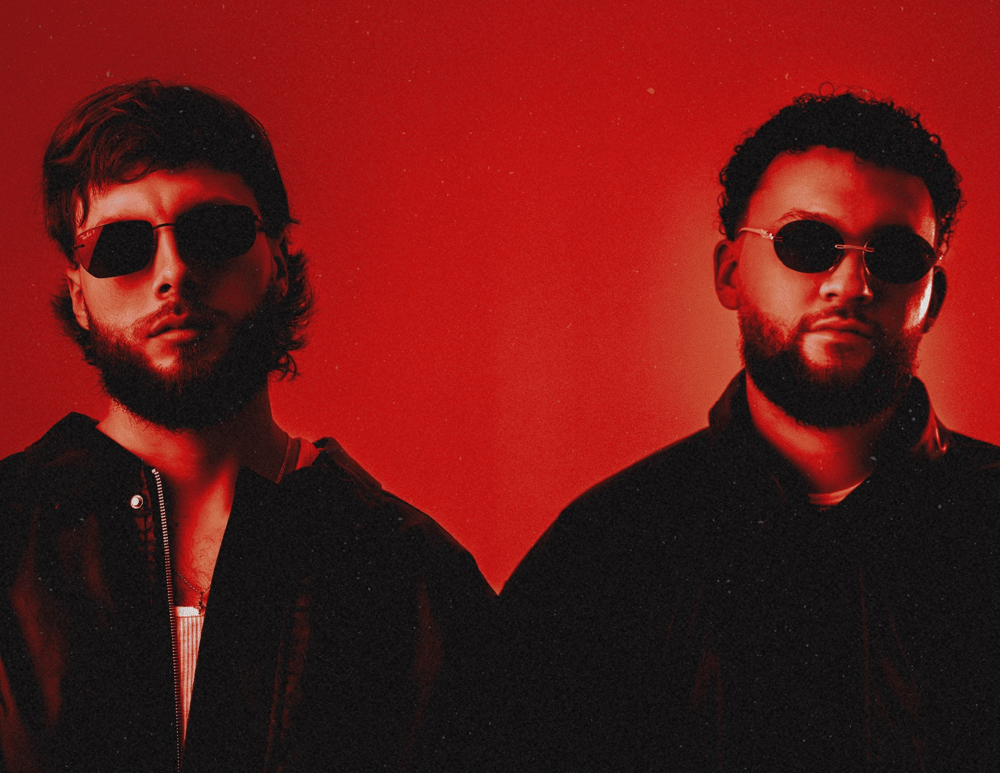

Welcome to the Sound Laboratory
Dictado porMoreno & PrietoOct 27 ▪ 28 ▪ 29 — Bootcamp Producción No.6
Testing Room Academy — Bootcamp #6 × Moreno & Prieto
3 días para entrar al proceso real de producción de Moreno & Prieto.
Durante tres sesiones intensivas vas a conocer desde adentro el proceso creativo de Moreno & Prieto: construcción de groove, drums, low-end, desarrollo de ideas, arrangement, procesamiento, mezcla y las decisiones que llevan una producción desde sus primeros compases hasta un track pensado para la pista.
No es simplemente otro tutorial.
Es la oportunidad de compartir durante tres días con productores que viven este proceso, hacer preguntas en tiempo real y llevar nuevas herramientas directamente a tus propias producciones.
Quiero reservar mi cupo
Solo 20 cupos
Programa03
¿Qué vas a aprender?
0%

Una buena producción comienza mucho antes de la mezcla.
Durante el primer día entraremos en la construcción de las bases de un track y en las decisiones que hacen que un groove realmente tenga movimiento.
Trabajaremos
- Cómo comenzar una idea con dirección
- Selección de samples
- Construcción de drums y percusión
- Groove y movimiento
- Relación entre kick y bass
- Construcción del low-end
- Uso creativo de samples y elementos vocales
- Cómo encontrar identidad desde los primeros compases
- Workflow creativo de Moreno & Prieto
ObjetivoConstruir una base sólida que tenga identidad, dirección y funcionamiento en pista.

Un buen loop todavía no es una canción.
El segundo día estará enfocado en desarrollar las ideas y convertirlas en una producción completa.
Trabajaremos
- Cómo salir del loop
- Estructura y arrangement
- Desarrollo de energía
- Transiciones
- Automatizaciones
- Variaciones de drums y percusión
- Tensión y release
- Procesamiento creativo
- FX y detalles
- Cómo mantener el interés sin sobreproducir
- Decisiones orientadas al dancefloor
ObjetivoTransformar una idea inicial en un track con evolución, intención y narrativa.

El último día conectaremos producción y mezcla para entender cómo llevar un proyecto hacia una versión sólida.
Trabajaremos
- Balance general
- Low-end: kick + bass
- Espacio y separación entre elementos
- Ecualización y dinámica
- Saturación y carácter
- Profundidad y estéreo
- Preparación final del track
- Cómo saber cuándo una producción está terminada
- Errores que pueden debilitar una producción
- Qué revisar antes de enviar música a un sello
- Experiencia y visión de Moreno & Prieto dentro de la industria
ObjetivoComprender las decisiones finales necesarias para llevar una producción fuera del estudio.
Moreno & PrietoMDE
¿Quiénes son?
Desde Medellín, Moreno & Prieto han construido una identidad alrededor del groove y los sonidos del Tech House y Minimal / Deep Tech.
Su música ha formado parte de catálogos de sellos como Repopulate Mars, Grood Taste, Libero Records, NoZzo Music, Witty Tunes y Manifest Records, entre otros.
Uno de los pasos más importantes de su trayectoria reciente llegó con “Get Out”, colaboración junto a Nemque incluida en Repopulate Stars: Planet Rumba Vol. 2 de Repopulate Mars, sello de Lee Foss, compartiendo lanzamiento con una selección internacional de productores emergentes de la escena house.
Su trayectoria representa una generación de productores colombianos que ha conseguido llevar su música desde Medellín hacia sellos y pistas de la escena electrónica internacional.
Ahora llegan a Testing Room Academy para abrir su proceso creativo y compartir durante tres días las técnicas, decisiones y experiencias detrás de su sonido.
Sellos
- Repopulate Mars
- Grood Taste
- Libero Records
- NoZzo Music
- Witty Tunes
- Manifest Records
Para quién08
Para productores que:
- 01Tienen buenas ideas pero sus proyectos se quedan en loops
- 02Quieren mejorar el groove de sus producciones
- 03Buscan mayor contundencia y claridad entre kick y bass
- 04Quieren comprender mejor el arrangement
- 05Necesitan desarrollar un workflow más eficiente
- 06Quieren mejorar sus decisiones de producción y mezcla
- 07Quieren conocer el proceso de artistas que ya han publicado profesionalmente
- 08Buscan nuevas herramientas para desarrollar su propio sonido
No necesitas ser un productor avanzado.
Sí necesitas tener ganas de experimentar, preguntar y llevar tu producción al siguiente nivel.
Incluye11
¿Qué incluye?
- 3 días de formación intensiva
- 6 horas de formación en vivo
- Sesiones directamente con Moreno & Prieto
- Producción, groove, drums y low-end
- Arrangement y desarrollo de ideas
- Procesamiento y mezcla
- Workflow y metodología de producción
- Experiencia y perspectiva sobre lanzamientos y sellos
- Preguntas e interacción en tiempo real
- Certificación Testing Room Academy
- Sample Pack Testing Drums +250 samples
Información05
Del bootcamp
- Fechas
- 27 · 28 · 29
octubre 2026 - Horario
- 7:00 PM — 9:00 PMHora Colombia
- Modalidad
- 100% OnlineVía Zoom
- Duración
- 3 días6 horas de formación
- Cupos
- Máximo 20Participantes
Inversión
Solo 20 productores.
La modalidad online permite que puedas conectarte desde cualquier lugar y entrar directamente al proceso de Moreno & Prieto.
Pero queremos conservar un grupo reducido que permita interacción y espacio para preguntas.
Por eso esta edición tendrá un máximo de 20 cupos.
Una vez completados, se cierran las inscripciones.
Público general
$350.000 COP
Acceso completo a los tres días del Bootcamp.
Beneficio egresados
$250.000 COP
Precio exclusivo para estudiantes y egresados de Testing Room Academy.
Ahorras $100.000 COP.
Reserva por WhatsApp · Info 311 373 3356
Tres días pueden cambiar tu forma de producir.
No porque exista una fórmula secreta.
Sino porque producir mejor también significa aprender a escuchar, decidir y terminar.
La intención no es que termines produciendo como Moreno & Prieto.
Es que regreses a tu próxima sesión con nuevas herramientas para desarrollar tu propio sonido.
Testing Room Academy
Bootcamp #6
Moreno & Prieto
- Fechas
- 27 · 28 · 29 octubre 2026
- Horario
- 7:00 PM — 9:00 PM COL
- Modalidad
- Online · Zoom
- Cupos
- 20 cupos
- Inversión
- $350.000 COP
- Egresados Testing Room Academy
- $250.000 COP